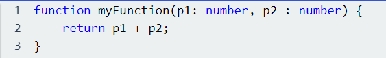
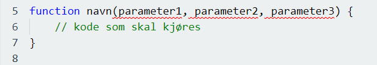
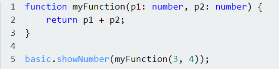

En funksjon i JavaScript et en blokk med kode som er laget for å utføre en bestemt oppgave. En slik funksjon i JavaScript utføres når noe påberoper det, eller som vi bruker i IT-språk, kaller på det. Et eksempel på en funksjon i JavaScript kan se ut noe som dette:
En JavaScript funksjon er definert med et «function» nøkkelord, etterfulgt av et navn og deretter parenteser. Navn på funksjoner følger samme regler for tegn som variabler, hvor man da kan bruke bokstaver, tall, understreker og dollartegn. I parentesene så kan vi inkludere parametere, akkurat som gitt i kodeeksemplet over, og hver parameter separerer vi med komma. Koden som man ønsker at skal kjøres i funksjonen, skriver vi inn i krøllete parenteser: { }. En oppskrift på å skrive funksjon blir slik:
Koden som vi skriver inn i en funksjon vil kjøre når «noe» påberoper (kaller) funksjonen. Dette skjer som regel:
Et eksempel vi kan bruke for å vise hvordan man kaller på en funksjon kan vi vise ved å bruke () operatoren. Dette kan vi gjøre slik ved hjelp av kode:
Når en JavaScript kode kommer til en «return» kode, så vil funksjonen slutte å kjøre. Hvis funksjonen ble påkalt av et JavaScript nøkkelord, så vil JavaScript «returnere» for å kjøre koden etter at den har blitt kalt. Funksjoner vil ofte lage en «return» verdi, og denne verdien blir returnert til det som kaller på funksjonen.
Funksjoner er veldig fornuftig å bruke, siden det tillater oss til å gjenbruke kode. Det vil da si at vi kan definere en kode en gang, og deretter bruke den samme koden mange ganger. Å lage funksjoner tillater deg å bruke den samme koden flere ganger med ulike argumenter, som dermed vil da produsere ulike resultater.
Hver gang en spørring er sann ønsker vi at det skal vises en “T”, men dersom en spørring er feil ønsker vi at det skal vises en “F”.